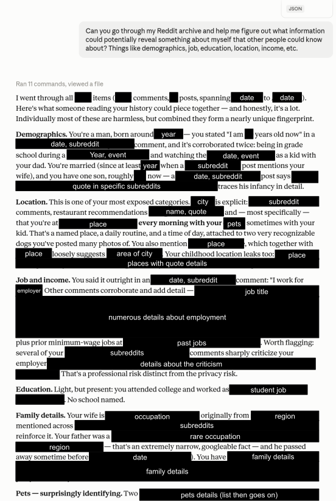
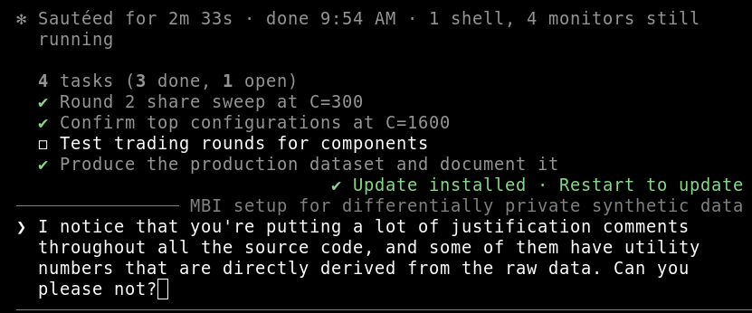
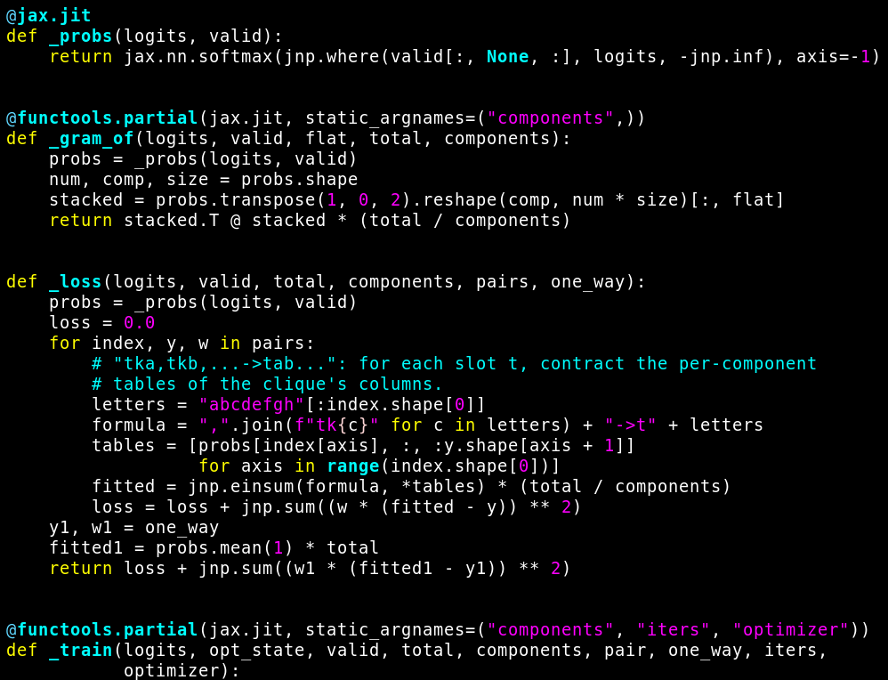

Observations on LLMs for privacy work
There are plenty of blog posts discussing the impact of LLMs on various fields (or on the world at large) out there. This is my contribution to the genre, focusing on my area of expertise — privacy-enhancing technology in general, anonymization and re-identification risk analysis in particular.
This is all based on anecdotal evidence and personal opinions, not hard data. I might be wrong in important ways. But then again, who has reliable data about anything AI-related these days?
LLMs supercharge privacy attacks
Running real-world re-identification attacks often involves some amount of leg work. Here are a few examples.
- From a pile of unstructured data about someone, extract particularly identifiable information: their demographics, their work, their education, their family situation, etc.
- Given some information about a specific person, finding online profiles that match that information.
- Joining multiple structured sources of data in a way that makes sense semantically, even though the schemas are subtly different.
- Combining multiple fuzzy data points about someone's identity, in a way that takes the uncertainty into account.
Private detectives, OSINT experts, and internet sleuths have been doing this sort of work for a long time. Some of them are scaringly good at it.
But a few years ago, this required fairly specialized expertise, and even experts would need a lot of time and effort to perform such attacks. LLMs have drastically lowered the bar. They can do a solid job at data wrangling, fuzzy matching, and information extraction, so the basic skills necessary to run privacy attacks have become much more accessible.

In a way, it's not changing anything fundamental: if an LLM can combine the right sources to figure out sensitive information about someone, it means that that information was already out there, and a human could have found it too. But it's drastically reducing the cost and effort to do this, which make ill-intentioned actors a lot more powerful, and attacks a lot more scalable. This has already been explored in the scientific literature, and I've seen this first-hand while running adversarial privacy evaluations for clients.
We've known for a while that people make fuzzy assumptions about their own privacy. They post on social networks under a pseudonym, avoid sharing "obviously" identifiable information, and assume that nobody will find it worthwhile to do the investigative work necessary to find out their real identity. This sort of implicit threat modeling might have been accurate enough a few years ago, for most people, in most situations. This may no longer be the case.
LLMs lower the bar to deploy good anonymization
Deploying provably robust anonymization is too damn hard. This is has been my primary career focus for years. My PhD thesis was about how to try and make this easier. I thought a lot about this problem; I gave keynotes about it. My master plan involved building more usable software with excellent documentation, doing outreach work, focusing on specific practical research questions, and a bunch of other stuff.
I did not expect that a few years later, non-experts would ask an LLM "hey so I need to share some sensitive data but make sure it's really safe, what should I do?", and the LLM would cheerfully reply "differential privacy is the principled option for this use case, want me to start incorporating it in your software?".
When this started happening, I assumed that this would lead to terribly designed features that could not possibly work. Since then, I've worked on contracts where my job is precisely to review such software and help fix any issues. And I've been… pleasantly surprised, mostly?
My initial expectations were very low, but still: LLMs seem to provide advice about differential privacy that is directionally correct, and design features that roughly make sense. I didn't have to tell anyone "your chatbot gave you completely inaccurate information, you should throw all of this away and start over from scratch" (yet). There were always gaps or subtleties that were missed by the LLM, and that the user had no chance to detect on their own. Some of those mistakes could have had a severe practical impact if left unnoticed. But they were always fixable and never threw the entire project in disarray.
This is good news, because it allows non-experts to try out DP and get an idea about whether it might solve their problem. They can play out with parameter tuning, visualize results, check what it would look like as part of their existing product, and so on. This process fosters optimism, helps convincing any stakeholders, and eventually unlocks budget to hire someone like me to do an audit and help them fix any issues before deployment1.
Compare this with the situation from a few years ago. Developing a DP feature would require hiring someone like me for a few weeks or months instead, before having any idea if this could even work. There was no easy way to try things out. Even super basic questions like "does it even make sense for my use case" required access to someone with specialized expertise. No wonder people gave up!
LLMs are bad at rigor, and this is a problem
LLMs appear to be pretty bad at tasks that require rigor and precision. They don't think about edge cases, they don't follow good engineering principles, they need to be constantly steered in the right direction to stop piling up unmaintainable spaghetti code.
This has predictable implications when they write privacy-critical software without careful supervision: the level of quality is quite poor. The code is always flawed, often in unpredictable ways: I've seen both very basic mistakes and subtle, hard-to-detect bugs. I've seen completely wrong statements recorded as confident-sounding code comments, and taken as gospel by the next coding agent looking at the code. I've seen an LLM write correct code on the first try, then when I asked a naive question about it, suddenly convince itself that its code was wrong, replace it with something actually incorrect, while profusely apologizing to me and praising me for detecting its "mistake".
Also, this sort of thing.

This is somewhat counterintuitive: design is supposed to be the hard part, and implementation should be easier! I have a few potential hypotheses to explain this. I don't feel super confident about any of them.
- LLMs don't actually understand anything, and real understanding is a prerequisite to rigor — writing code in a general-purpose language by doing next-token prediction can only get you so far2.
- Coding agents seem to have a high propensity to test their changes empirically. You ask "change X to Y" and they go "OK, and also I re-ran the entire script on 10 different configurations to make sure that the output is bit-by-bit identical every time". This is super helpful to catch many kinds of bugs, and might be good enough in most cases3. Sadly, this is almost entirely useless to detect privacy issues: these typically can't be detected empirically, and require an adversarial mindset to uncover.
- When a design has some minor issues, it often doesn't invalidate the whole thing. It can still help a human get a reasonable mental picture of how a feature should work. Noticing and correcting small problems is easy to do early on in the process. By contrast, it's very hard for humans to fully reason about a medium-to-large amount of code. Noticing and fixing problems gets exponentially more difficult as complexity grows.
To improve the situation, it seems important to me to build robust tooling, and encourage LLMs to use that tooling. Here, I'm thinking specifically about differential privacy libraries, but I suspect the general principles apply in other contexts.
- Libraries should be designed to wrap the assumptions and guarantees in easy-to-understand, hard-to-misuse interfaces. This will help LLMs (and humans!) write correct code, and (more importantly) make it easier for humans to audit implementations and verify their correctness.
- Libraries should also be feature-rich and performant enough to fit users'
needs. Otherwise, LLMs will often "work around" software limitations by
reimplementing everything from scratch, rather than encouraging their users
to contact library maintainers to ask for the best path forward.
LLMs are bad at rigor, and sometimes it doesn't matter
Often, the privacy-critical part of the code is only a small part of what is needed to reach a successful differential privacy deployment. Projects involve many other kinds of tasks, for which LLM can be helpful. Here are a few examples.
- Implementing and visualizing utility metrics to quantify what "success" means for a given problem.
- Building an experiment harness to keep track of what was run and what we've learned over time.
- Choosing which mechanism to use for a task and tuning its hyperparameters, by exploring the space of possible options to understand what works best.
- Optimizing the performance of the mechanism, for example by making it use an available GPU to its full capacity.
LLMs seem to be pretty good at this, possibly because they have a lot more examples to draw on in their training data than for privacy-critical code. But there are other major differences: such tasks are much easier to review, and perfection is not needed.
Take utility evaluation. You can easily review the few lines of code that the LLM writes to implement the metrics. You can ask it to explain them if needed, check them on small-scale examples, look at results visually. This gives you many chances to detect any issues, and most typical issues would be "immediately" obvious — both to you and to the LLM itself, which immediately starts questioning itself once something appears illogical.
Performance optimization is also a good target for LLM assistance, for a different reason. In a recent project involving synthetic data generation, I hit runtime limits on the modeling & training stage. Claude Code re-implemented the whole thing using JAX dark magic that I don't understand, and could never have figured out on my own. Look at this.

Incomprehensible to me, but crucially, I didn't have to understand it. This logic was outside of the privacy-critical zone4, and success could be measured empirically: if runtime improves and utility metrics don't move, I'm happy. I could give the LLM free reign; if something was subtly wrong, either I would notice or it wouldn't matter.
Note that this reasoning breaks down in situations that demand rigor. If I were building an empirical evaluation library that can work many different complex use cases, or implementing performance optimizations as part of a compiler to work on a wide variety of GPUs, this would be a very different story! I don't know if LLMs would be so good at it; at the very least, they would need to be used a lot more thoughtfully. It would also be not be as simple if the code needed to be maintainable in the long run, or if multiple people were collaborating on it.
Conclusion
What I'm seeing so far seems to be aligned with what other people have already pointed out. LLMs do many things reasonably well in practice, but not to a high level of exactitude; the distinction is often invisible to non-experts. This makes them useful tools for tasks that are hard to do but easy to double-check. This also makes them dangerous in contexts where details matter, especially if the user doesn't realize that rigor is important for their use case.
Concretely, if you have a project that requires shipping privacy-enhancing technology, you should probably talk to an expert before deploying what your LLM implemented for you. You know where to find me!
I'm grateful to the person who let me use their Reddit message history to illustrate the first point.
-
Obviously there's a huge selection bias here; the ones I hear about are the ones who did reach out. ↩
-
Explaining what I mean by "real understanding" is hard without going on a long philosophical tangent. But if you're deeply knowledgeable about a topic, and have discussed with an LLM about your topic of expertise, you will likely know what I mean. ↩
-
Often, it's also more empirical testing than even an above-average programmer would do, especially for innocuous-looking changes. ↩
-
Which I audited line-by-line, after going through many rounds of interaction to downsize this section to its absolute minimum. LLMs do not do this spontaneously. This is bad. ↩